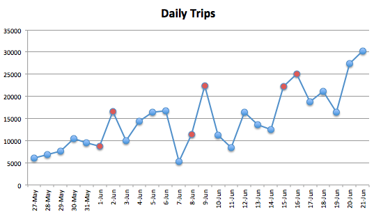
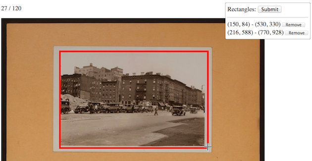
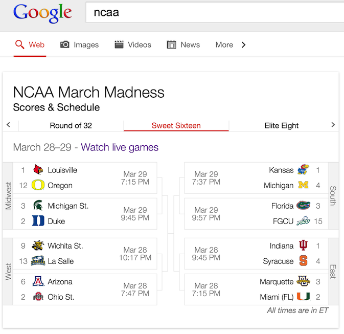

08.15.13
Posted in Uncategorized at 5:23 am by danvk
Back in February, I posted a list of living people born in the 1800s. There were twelve. Now, six months later, we’re down to eight! As one of my coworkers says, there seems to be a conspiracy where the oldest person in the world keeps dying.
| # |
Name |
Sex |
Birth date |
Age |
Residence |
| |
Jiroemon Kimura |
M |
1897 April 19 |
116y 54d |
Japan |
| 1 |
Misao Okawa |
F |
1898 March 5 |
115y 163d |
Japan |
| |
Maria Redaelli-Granoli |
F |
1899 April 3 |
113y 364d |
Italy |
| |
Elsie Thompson |
F |
1899 April 5 |
113y 350d |
United States |
| 2 |
Jeralean Talley |
F |
1899 May 23 |
114y 84d |
United States |
| 3 |
Susannah Jones |
F |
1899 July 6 |
114y 40d |
United States |
| 4 |
Bernice Madigan |
F |
1899 July 24 |
114y 22d |
United States |
| 5 |
Soledad Mexia |
F |
1899 August 13 |
114y 2d |
United States |
| 6 |
Naomi Conner |
F |
1899 August 30 |
113y 350d |
United States |
| |
Evelyn Kozak |
F |
1899 August 14 |
113y 301d |
United States |
| |
Mitsue Nagasaki |
F |
1899 Sept. 18 |
113y 272d |
Japan |
| 7 |
Emma Morano-Martinuzzi |
F |
1899 Nov. 29 |
113y 259d |
Italy |
| 8 |
Grace Jones |
F |
1899 Dec. 7 |
113y 251d |
United Kingdom |
Naomi Conner is new to this list—perhaps she was “discovered” since February. As I mentioned in the previous post, it’s impossible to say when the 19th century will be “closed out”. If the usual probabilities play out, it’ll happen sometime in the next 2–3 years. But if any of these eight women turn out to be another Jeanne Calment, then it’ll be another ten.
Permalink
06.22.13
Posted in Uncategorized at 2:11 pm by danvk
I enjoyed Antonio D’Souza’s Citibike Traction chart but thought it painted an overly rosy picture by showing cumulative rides, not daily rides.
Here’s a version of his chart with daily rides:

Saturdays and Sundays are colored in red. Sundays seem to be particularly popular days to use Citibike. The daily and weekly passes launched on June 2nd, which helps explain the big uptick on that day. There’s also been a big uptick in the past two days, on the 20th and 21st, for reasons that are unclear to me. The start of the summer tourist season?
The overall trend seems to be up, though. It’ll be interesting to revisit this in a few months and see if the trend continues to hold up.
Raw data comes from the Citibike Blog. You can download the spreadsheet I used to generate this chart here.
Permalink
04.20.13
Posted in Uncategorized at 11:26 am by danvk
As you may remember from a previous post, I’ve been doing some work with a collection of old images. The first problem was to write a program to find the individual photos in images like these:


This is easy for humans, but hard for a machine!
A key part of developing any heuristic algorithm like this one is to get some training data. You find the correct answer by hand for some fraction of the data, then judge your program by seeing how its results compare to the “golden” data.
For my photo detection project, the golden data might look like this:
image_url,rects
images/700005f.jpg,[{x1:959,x2:3137,y1:533,y2:1939}]
images/700049f.jpg,[{x1:863,x2:3033,y1:571,y2:1983}]
images/700079f.jpg,[{x1:829,x2:2987,y1:457,y2:1852}]
images/700256f.jpg,[{x1:837,x2:3002,y1:536,y2:1927}]
images/700284f.jpg,[{x1:919,x2:2303,y1:845,y2:2956}]
images/700288f.jpg,[{x1:1140,x2:3290,y1:545,y2:1923},{x1:1157,x2:3313,y1:2286,y2:3659}]
You could generate this sort of data by hand using a photo inspector and a text editor. But it would be tremendously tedious. You wouldn’t want to do this for 100 images unless you were being paid. For a personal project, it’s a non-starter.
A little bit of usability work here can go a long way. For this project, I built a simple web tool using my localturk service. It’s a tool which helps you step through repetitive tasks using a web browser. It exposes the exact same API as Amazon’s Mechanical Turk: CSV input + HTML Template → CSV output. But it runs on your own machine and you do the work yourself. No external turkers or exchange of money involved.
My tool shows the original image on the page and asks you to drag rectangles across the individual photos. You can resize or move the rectangles after you draw them:

Click the image to try this tool in your browser.
localturk records the responses in a a CSV output file which you can use as your golden data. The whole process is done visually in your browser.
I’d estimate I spent maybe an hour creating that template and half an hour stepping through the 100 photos. This may or may not compare favorably to the photo inspector and text editor process I described above, but it was certainly more enjoyable.
In his Machine Learning class, Andrew Ng says that you should ask “how hard would it be to get 10x more training data?” With this fancier system, it would take a few hours. Or I could upload 1,000 tasks to Mechanical Turk and trade time for money.
How do other ML people generate small amounts of training data?
Permalink
03.27.13
Posted in Uncategorized at 8:28 pm by danvk
My group recently launched a custom UI for March Madness searches:

The Sweet Sixteen view looks particularly nice on tablets, where you get high resolution team logos and crisp text for the team names. While games are being played, you can follow the scores live in the bracket.
The launch was an interesting experience. I wrote a tweet shortly after we went live. It immediately got picked up by TechCrunch, Search Engine Land and Fred Wilson.
There are some slightly wild CSS tricks going on to mirror the bracket on the right-hand side and to make substitute team abbreviations when their full names won’t fit. Fodder for a future danvk.org post!
Permalink
03.03.13
Posted in Uncategorized at 11:25 am by danvk
I sometimes see code like this to generate DOM structures in JavaScript:
var div = document.createElement("div");
div.innerHTML = "<div id='foo' onclick='document.getElementById(\"foo\").style.display=\"none\";' style='position: absolute; top: 10px; left: 10px;'>" + content + "</div>";
document.body.appendChild(div);
This style gets very confusing very quickly. The issue is that it uses JavaScript to write HTML, CSS and even JavaScript inside HTML!
The key to untangling these knots is to remember this rule:
Keep your HTML in your HTML, your JavaScript in your JavaScript and your CSS in your CSS.
Here’s how I’d rewrite that snippet with this in mind:
HTML:
<div id='foo-template' class='foo' style='display:none;'>
</div>
CSS:
.foo {
position: absolute;
top: 10px;
left: 10px;
}
JavaScript:
var $foo = $('#foo-template').clone().removeAttr('id');
$foo
.on('click', function() { $(this).hide(); })
.text(content)
.appendTo(document.body)
.show();
The idea is that JavaScript is a really terrible language for building DOM structures. You can use either the innerHTML technique (in which case you run into quoting issues) or the DOM manipulation APIs (which are quite cumbersome and verbose).
HTML is a great way to define DOM structures! So define your DOM structures there, even the ones that you’ll add dynamically. You can use jQuery’s clone method to make copies of them that you fill out before adding them to the page.
CSS is also a great language for defining styles, so why put them inline in your HTML? Just use a class and move the styles into your CSS.
And really, do you want to write JavaScript that writes HTML that includes JavaScript?
You can see a real-world example of this technique in OldSF’s HTML, JS and CSS.
Permalink
« Previous Page — « Previous entries
Next entries » — Next Page »
{kind=link}